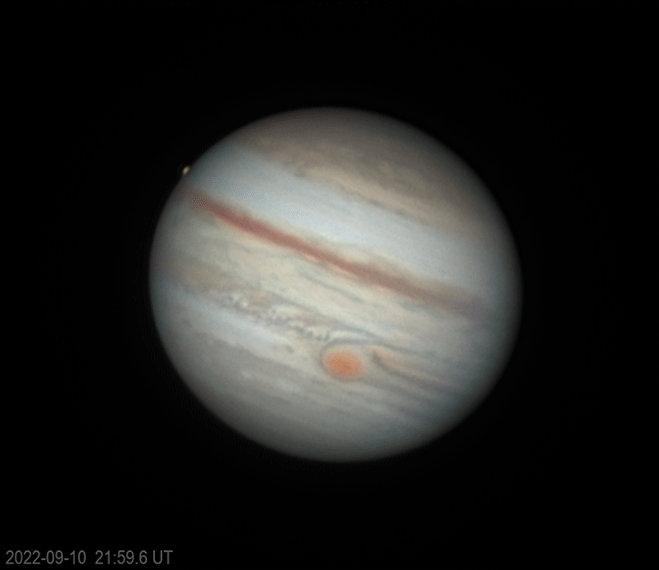
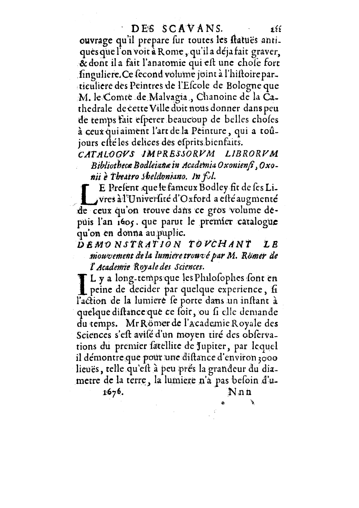
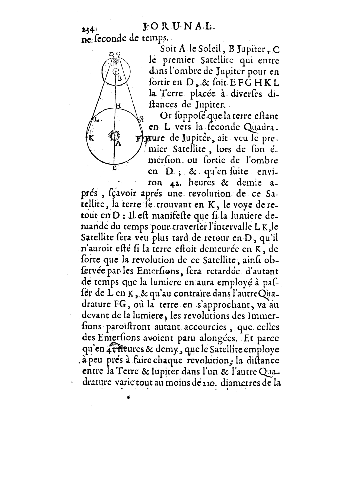
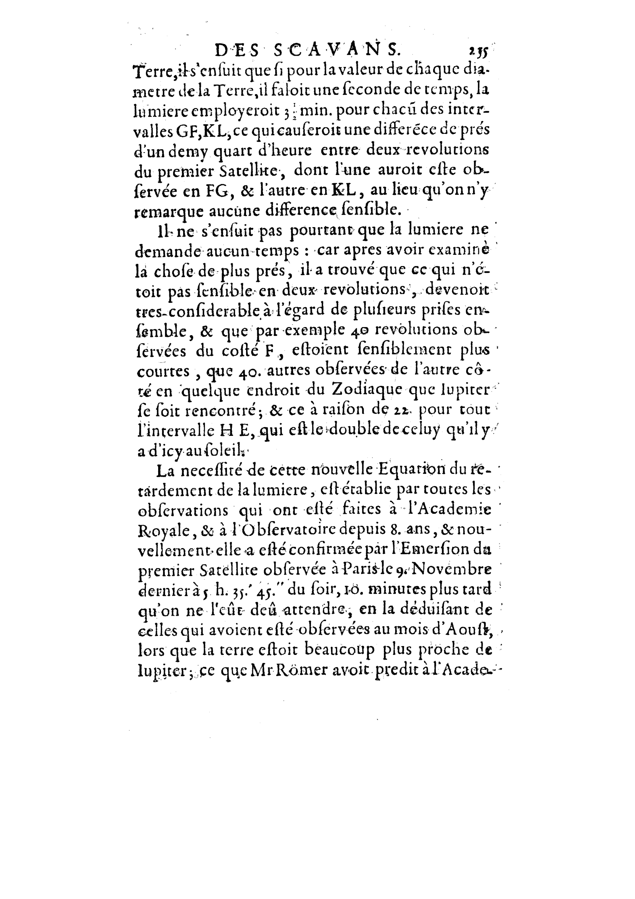
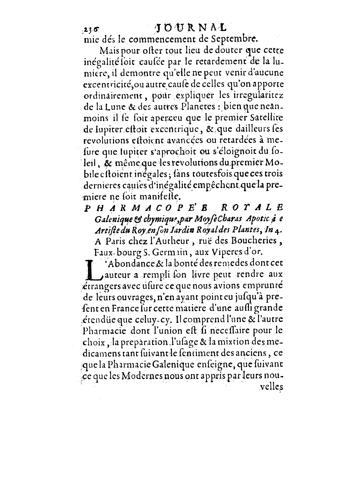
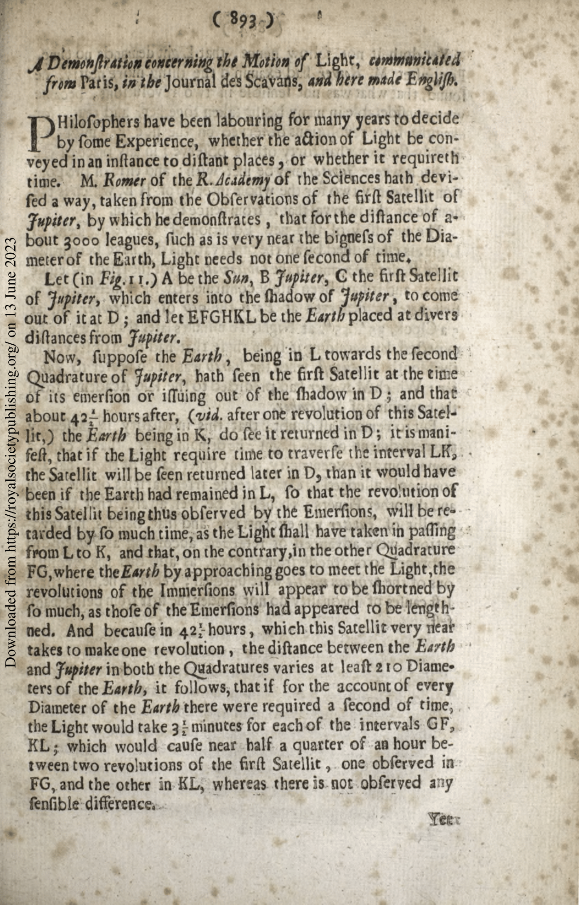
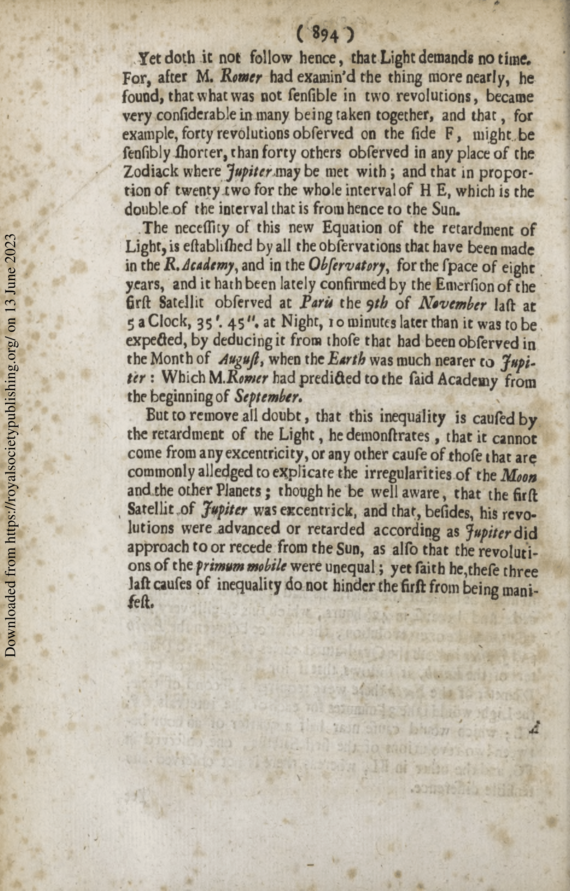

The orbital period of Io is 1.769 Earth days. This means that Io orbits Jupiter once every 1.769 days, as seen from Earth.
In 1676, Ole Roemer observed that the time between eclipses of Io was not always the same. When the Earth was closest to Jupiter, the time between eclipses was shorter than when the Earth was farthest from Jupiter.
Roemer hypothesized that this was because the light from the eclipses had to travel a longer distance when the Earth was farther from Jupiter. He calculated that the speed of light was about 225,000 kilometers per second.
Today, we know that the speed of light is actually about 299,792 kilometers per second. However, Roemer's estimate was very close, considering the limitations of his instruments and the data he had available.
Here is a more detailed calculation of the speed of light using the data from Roemer's observations:
The average time between eclipses of Io is 1.769 days.
When the Earth is closest to Jupiter, the time between eclipses is 1.763 days.
When the Earth is farthest from Jupiter, the time between eclipses is 1.773 days.
The difference in the time between eclipses is due to the fact that the Earth has to travel a longer distance to reach Jupiter when it is farthest away. The extra distance that the light has to travel is equal to the diameter of the Earth's orbit around the Sun.
The speed of light can be calculated using the following formula:
speed of light = distance / time
In this case, the distance is the diameter of the Earth's orbit around the Sun, which is about 150 million kilometers. The time is the difference in the time between eclipses, which is about 0.006 days. Plugging these values into the formula, we get:
speed of light = 150 million kilometers / 0.006 days ≈ 2890000 kilometers per second
Time difference observed by Roemer was actually 11 minutes, so speed of light was around 2250000 km/s. Find this animation of Jupiter-Io vs Sum-Earth systems in Firefox browser Image of eclipse:
      